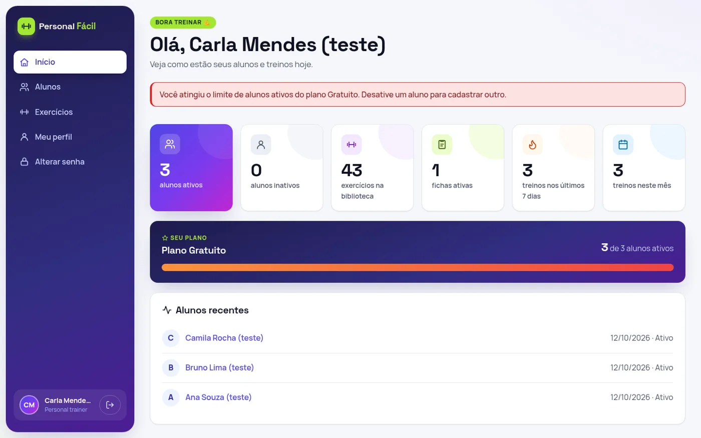
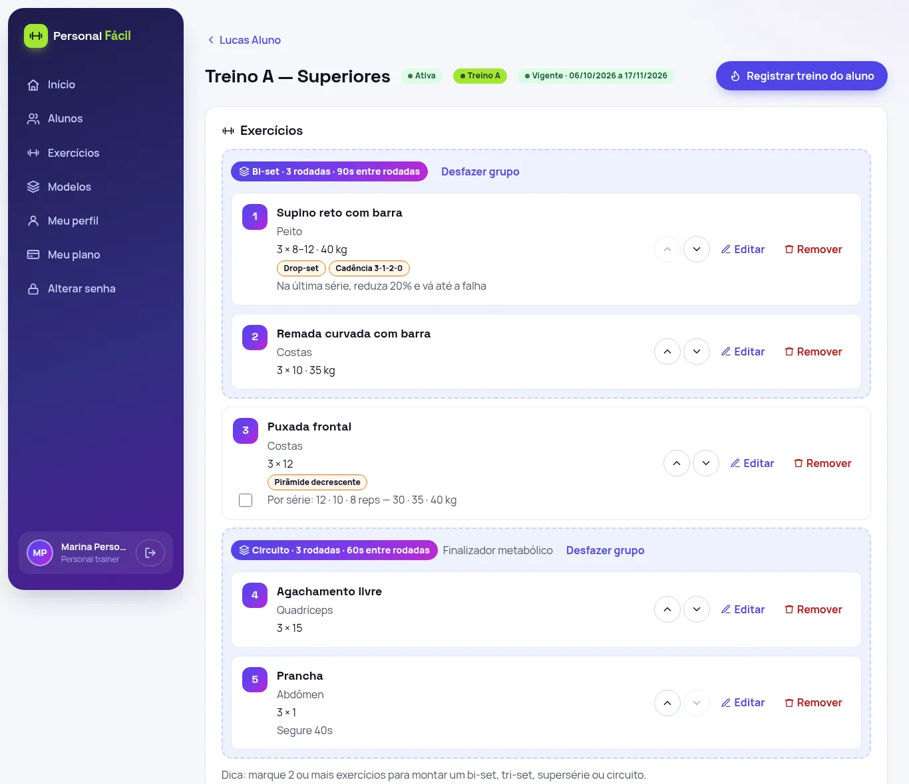
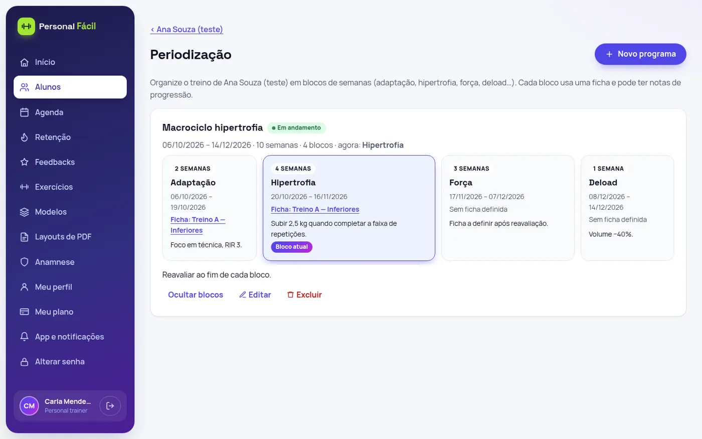
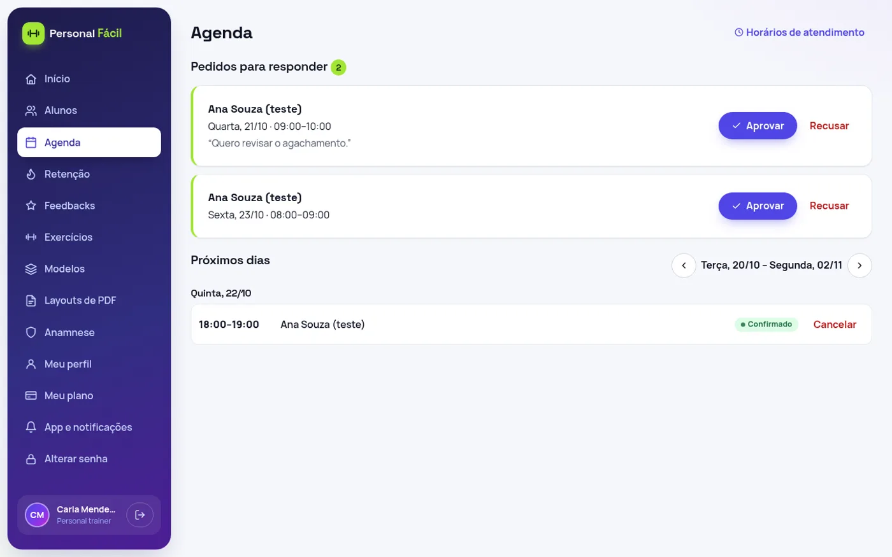
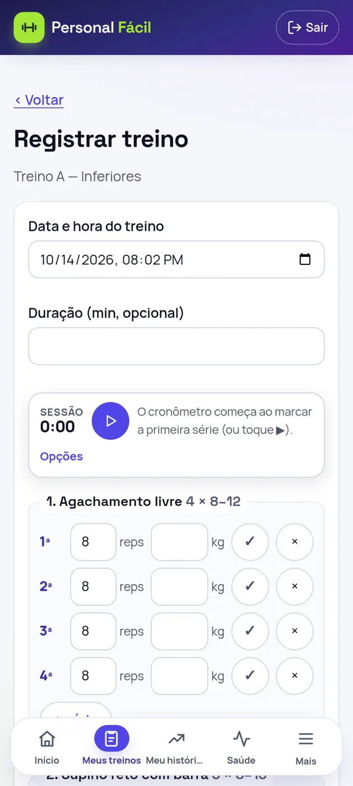

Personal Fácil
SaaS para personal trainers autônomos gerenciarem alunos, exercícios, fichas de treino e o histórico de execução — com app instalável para o aluno.
Ver repositórioProblema
Personal trainers autônomos costumam gerenciar alunos, fichas e acompanhamento em planilhas, PDFs soltos e mensagens. O Personal Fácil centraliza a prescrição, a execução dos treinos pelo aluno, a avaliação física e o acompanhamento de retenção em um único sistema multi-tenant.
Stack
| Backend | Java 21, Spring Boot 4.1 (Spring Framework 7, Hibernate 7), Spring Data JPA, Flyway, springdoc-openapi, Maven — monólito modular |
| Banco | PostgreSQL 16 com migrações versionadas (Flyway) |
| Frontend | Angular 20 (standalone, strict), TypeScript, CSS puro com design tokens, PWA |
| Infra | Docker Compose (postgres, mailpit, backend, nginx); stack de produção com TLS |
Principais funcionalidades
Gestão
- Autenticação por sessão com proteção CSRF
- Cadastro de alunos e convites
- Biblioteca de exercícios com vídeos (YouTube nocookie ou upload MP4/WebM)
- Planos Free / Starter / Pro com limites por plano
Prescrição
- Fichas de treino e modelos editáveis
- Prescrição avançada: bi-set, tri-set, supersérie, circuito, métodos e carga por série
- Periodização em blocos (macrociclo) e aplicação de modelo a vários alunos
- PDF da ficha com layouts próprios (papel timbrado ou modelo Word)
Aluno
- Execução e histórico de treinos, com cronômetros de descanso e sessão
- Treino em andamento salvo a cada série, com cópia offline e sincronização
- PWA instalável e notificações Web Push (opt-in)
- Feedback pós-treino (PSE, humor, dor)
Acompanhamento
- Anamnese versionada com PAR-Q e avaliação física (protocolos JP3/JP7/Guedes + Siri)
- Área de retenção (dias sem treinar, queda de frequência, fichas vencidas)
- Agenda com disponibilidade, pedidos e aprovação sem conflito
- Anexos entre personal e aluno (PDF, Excel, CSV)
Destaques técnicos
- Isolamento por tenant: cada personal só acessa os próprios dados; o aluno vê apenas o que está nas suas fichas ativas.
- LGPD: consentimento específico para dados de saúde (revogação apaga os dados), inventário de dados e scripts de exclusão; fotos sem EXIF/GPS.
- Segurança: revisão OWASP, dependências sem CVE alta/crítica, validação de uploads por extensão + assinatura (magic bytes), CSP.
- Operação: backup criptografado com restore testado; acessibilidade verificada com axe e responsividade 360/768/1280.
- PWA cuidadoso: service worker só com assets estáticos (nunca respostas da API); push sem dados de saúde no conteúdo.
- Testes: na Fase 14, backend com 171 testes unitários + 95 testes de integração e frontend com 174 specs.
- Desenvolvido de forma incremental em 17 fases documentadas no repositório.
Telas
Capturas do ambiente de testes, com dados fictícios.




